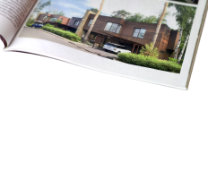

- 156 - 636м2Площадь квартир
- 475Парковочных мест
- 10 минДо метро Фрунзенская
- 2 гаПлощадь собственного парка
Жилой комплекс из четырех клубных домов класса де-люкс в английском стиле, расположенный в собственном парке площадью 3 га в районе Хамовники. Авторы интерьеров жилого копмлекса,и дизайна частного парка – дизайнеры мировой величины. Так, общественные зоны оформляет Дэвид Линли, племянник королевы Великобритании и глава компании LINLEY, а настоящий английский парк для жителей
- Презентация ЖК Knightsbridge Private Рark
- Типы планировок апартаментов
на карте
- КРАСОТА И ЗДОРОВЬЕ7
- МАГАЗИНЫ7
- ОБУЧЕНИЕ7
- ДЕТСАД7
- ОТДЫХ, РАЗВЛЕЧЕНИЯ7